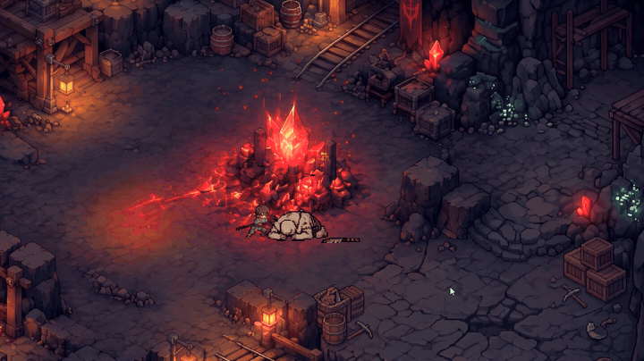
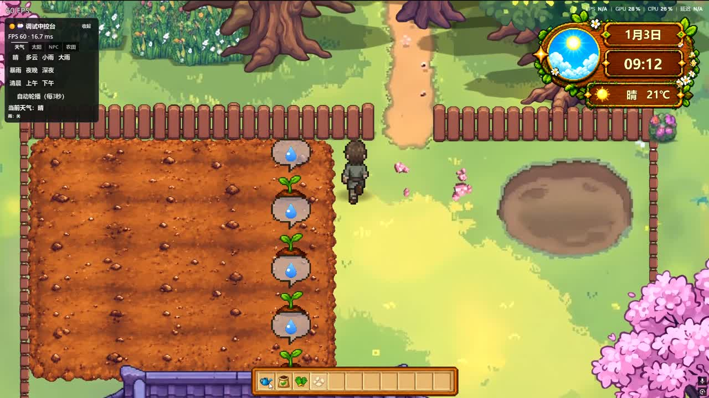

骷髅兵
近战追击，举盾时正面免伤，破盾后进入硬直。
12 分 35 秒，从清晨到交付的完整流程；具体系统细节，见下方各页。

1080p 60 帧；播放器加载慢时，可直接在 B 站打开 ↗。
天气、时间、环境声与 BGM 会一起变化。同一个地方，不同时间来，气质完全不同。
海面不是循环动画：原画拆成几层遮罩，再用同一张“离岸距离”驱动。
同一张地图跟着游戏内时钟换光照：清晨、正午、黄昏、深夜的环境声与 BGM 都不一样。点开左侧大图，进入天气系统页。
四向攻击、蓄力、冲刺与弹反；点进去可以看角色和怪物的完整技能组。

四向攻击、蓄力拔刀斩、冲刺与弹反。弹反成功会打断敌人动作，失败则进入眩晕。
从索敌、追击到技能释放，不同怪物承担不同的战斗压力。
近战追击，举盾时正面免伤，破盾后进入硬直。
保持距离，单发点射与散射压制。
火球、雷电范围技能，还能给周围怪物上护盾。
跳跃砸地，落地前标出红圈；移动慢、伤害高。
战斗之外，小镇还有另一套节奏：什么时候下竿，什么时候收火，都由你决定。
翻土、播种、浇水、施肥，作物会随时间进入四个阶段；收获的菜可以直接拿去厨房。

13 种作物，四种生长阶段，部分作物一次能收多个。
每个 NPC 有自己的人设、职业和记忆，对话由本地逻辑与 DeepSeek API 共同生成。
对话、表情立绘与自由问答，回答会先经过本地逻辑，再交给模型组织语言。
影子、睡觉、存档、NPC 心情、商店和设置，不上主舞台，但都在实际跑。

六个不占主线、但每天都会用到的系统，单独整理成一页。